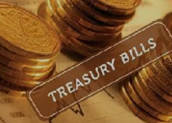

TREASURY BILLS
“You need to make big bets when the odds are in your favor -- not big enough to ruin you, but big enough to make a difference.” – Bill Gross
Treasury Bills
Savings and investments are key to financial prosperity. We have talked about saving while investing or vice verser. In an effort to understand savings, so far, we have discussed money market fund (MMF), and how it differs from banks savings account. Today, we are exploring further and discuss government securities; treasurey bills and bonds. Specifically, treasurey bills.
Treasury bills also known as T-bills, are a secure, short-term investment, offering you returns after a relatively short commitment of funds (usually less than 1-year; 91-days, 182-days or 364-days). Treasury bill rates in Kenya are attractive, providing an excellent investment opportunity that is readily available, as they are auctioned each week. They are sold at a discount. This means that investors choose the amount that they will receive when the bill matures, or the face value of the bill, and pay less than that amount when purchasing it.
Definition of terms
Allow me to introduce you to the common terms in tresury bills. They not new but important for novice to understand and refer to as they familirize themselves with the investment.
- Par value - With t-bills, you agree with the issuer, mostly the government through the central bank, that you will be paid some specific amont in the future for your current investment. This amount you are promised to be paid on maturity is what we call par value. Also known as face value.
- Purchase value - This is the amount paid by the investor at the beginning of the investment period for them to get the par value. This amount is the principal investment plus returns on investment/ yeild.
- Discount rate - When the interest is paid at the start of the period, it is known as discount rate. This is the case with t-bills as you work with the maturity amount.
The Features of treasury bills
In order to understand the concept clearly, let's look at the characteristics of treasury bills.
- Minimum initial deposit - The minimum initial deposit for treasury bill is Kes. 100,000.
- Minimum and frequency of top up - They are offered on weekly basis, thus you can top up weekly with a minimum top up of Kes. 100,000.
- Interest paid upfront - Treasury bills earn returns in form of a discount due to their short tenure. The discount/interest is enjoyed upfront at the point of purchase. For instance, if you purchase T-bills worth 1 million shillings, you will pay Kshs. 900,000 and the Kshs. 100,000 becomes your return/interest.
- Annualized rate - The interest paid out is annualized, that is, it is calculated over 12 months and multiplied by the number of days of the T-bill.
- Taxation - Treasury bills attract a 15% witholding tax which is imposed on the return, which we call discount.
Benefits of T-bills
What are the advantages of investing in T-bills?
- Security - They are secure investment as are issued by the government of Kenya.
- Returns - They have competitive returns making them attractive for investments.
- Availability - They are available for investments as they are offered to the market in the weekly basis.
Requirements for investing in T-bills
What do you need to start investing?
- CDS account - Should have a CBK CDS (Central Depository Securities) Account by opening directly with CBK or through investment banks.
- Application - You should have fully executed agreement documents.
- KYC documents - You should have national ID/ passport, KRA pin and passport sized photo.
Conclusion
T-Bills are short term securities; hence they are more suited as a tool to accumulate capital for projects/longer-term investments. They are a way to stash away the money you do not currently require to avoid the temptation of using it for an unintended purposes. Allow me to conclude with the sayings from Bill Gross, "Finding the best person or the best organization to invest your money is one of the most important financial decisions you'll ever make!" Thank you for reading!
About the Author
Galm Dida - Credit and Investment Coach (KCB - Isiolo) - I am passionate of financial independence for youth and women in marginalized regions. Currently supporting over 15 women and youth groups around Isiolo in the matters of savings and investment. Join us as we inspire the community in financial success.
Contact
Tell: 0741370493 || email: Send me an email || whatsapp: WhatsApp Me
Quick links
Learn more about money market fund (MMF)